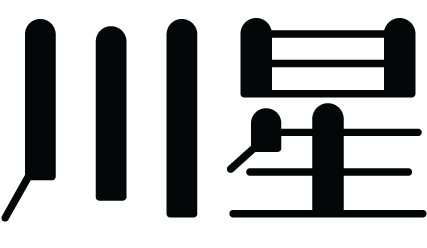

별의 강을 담아낸 카페,

별의 강을 담아낸 카페,
한 잔의 커피를 만드는 원두는
나에게 60여가지의 좋은 아이디어를 가르쳐준다.
-루드비히 판 베토벤-
카페 천성은 약속합니다.

카페 천성,
'트렌드를 선도하는 맛'
카페 천성은 새로운 트렌드를 만들어냅니다.
별처럼 반짝이는 취향을 담아내기 위해 끊임없이 연구합니다.
천성에서 당신만의 별을 찾아내 유행을 선도하세요.
'나만을 위한 특별한 맛'
고객님만을 위해 매번 직접 내리는 커피 원액.
주문해주신 스타일로 매번 특별하게 원두를 추출합니다.
천성에서 자신의 별을 발견하는 새로움을 만나보세요.